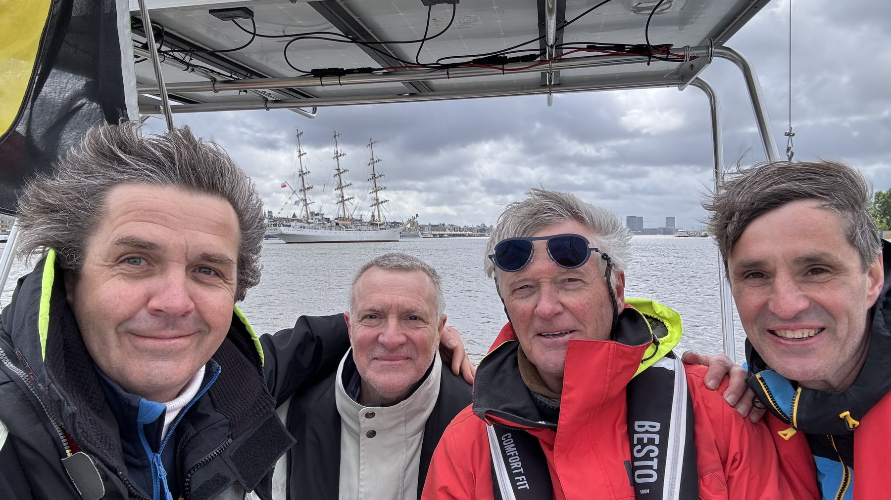

21 april 2024
Nomad is thuis!
Vrijdag 18 april heeft de crew van etappe 11 Nomad veilig naar haar thuishaven Antwerpen gebracht. Regen, windstoten tot 7 Beaufort en een Westerschelde tjokvol beroepsvaart, we hebben ons niet verveeld!
Geduldig lag Nomad voor dag en dauw te wachten in Terneuzen op Luc, Wim, Philip G en haar skipper. De weergoden waren niet helemaal goed gezind, maar de voorspelde 5-6-7 Beaufort noordwest was wel perfect om te knallen.


Met 2-3kts stroming in ons gat zijn we een kleine 5 uur en een tiental gijp-manoeuvers later al in Antwerpen, na nog een spannend wedstrijdje met een Poolse driemaster (guess wie gewonnen heeft 💪?). Aanleggen bij 27kts in een smalle jachthaven vol betonnen palen is niet echt de favoriete activiteit van de skipper 😱 maar dankzij een geoliede crew met lokale know-how is ook dat perfect gelopen. Gezellige en lekkere afsluiter in The Jibe met zicht op onze mooie koekenstad.
Volgende keer dat deze crew samen zeilt is onze bestemming New York City !
Onze Nomad blijkt op het water in topvorm en is alvast helemaal klaar voor het event van donderdag. CU there 🤘!